数据价值初探
从大数据到人工智能：
数据，如何变成商业价值
本讲要回答三个问题
数据
从哪里来？
数字、图像、声音；互联网、基因、天文、工业、政务。
国家为什么
押注数据与 AI？
从“大数据战略”到“人工智能+”，数据成为 AI 的燃料。
价值
怎么衡量？
收入、支出、风险——以及如何给“效果”一个可量化的参考系。
大数据时代
什么是数据？
Anything can be recalled.
点击画面，或按 → 显示
你的一天，
留下了什么数据？
点击一个日常动作，看它产生哪些数据。
数据不只是表格：数字 · 图像 · 声音
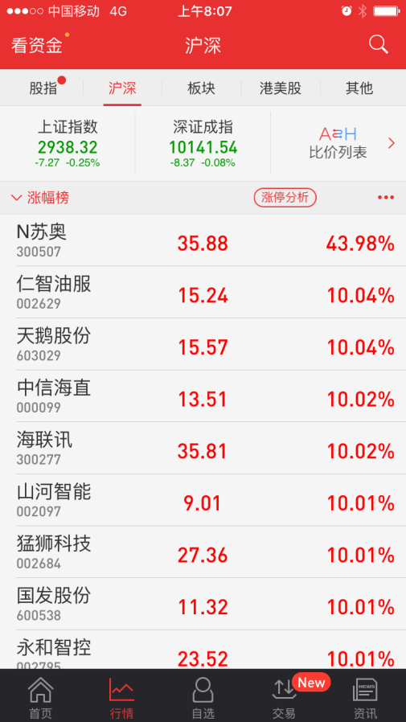
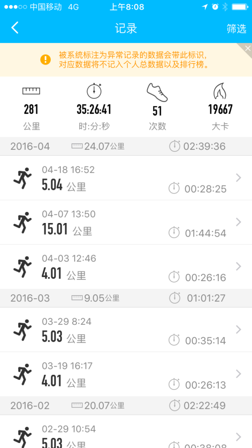
结构化，天然可计算：价格、指标、时间序列。
非结构化，需要算法先“看懂”，才能变成可用特征。
连续信号，“听写 → 理解”是 AI 最早走进日常的能力之一。
数据时代的特征：每个终端都是传感器
手机
App、位置、摄像头、麦克风
可穿戴设备
心率、睡眠、运动轨迹
车联网
车辆状态、路况、驾驶行为
大数据时代 = 有数据 + 有能力处理数据
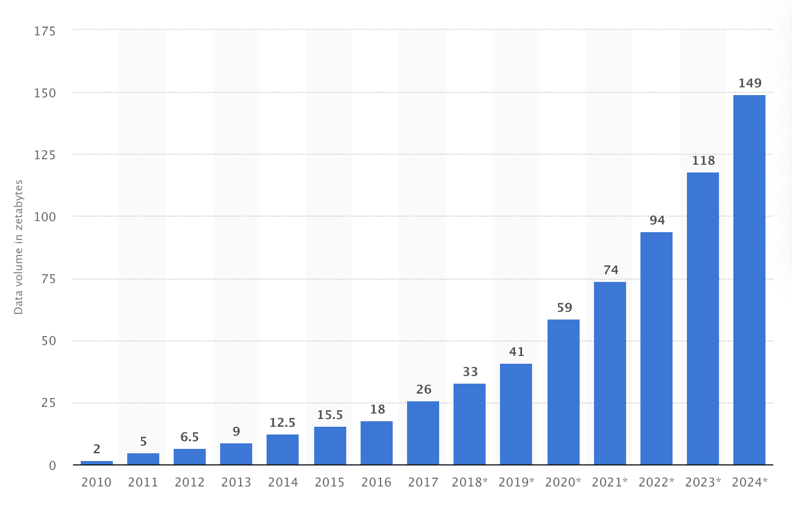
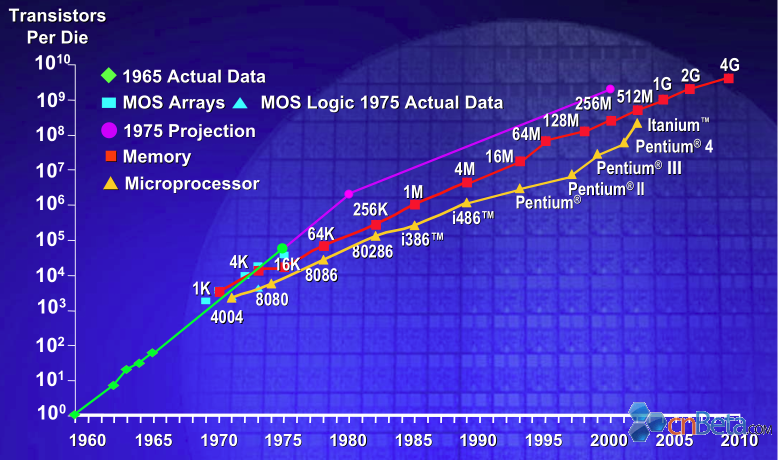
两条指数曲线交汇——数据 × 算力，是机器学习得以大规模落地的前提。
互联网：每一次点击
都是一条数据
科学也在制造大数据
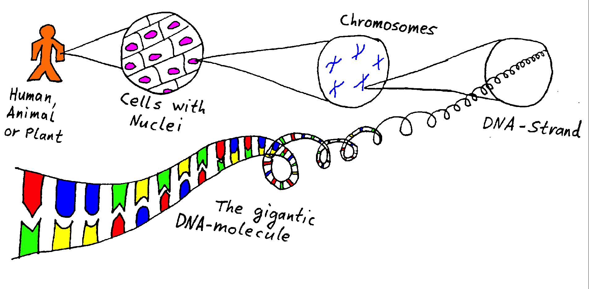
一个人的全基因组测序（约 30×），原始数据在 百 GB 量级⚠。
巡天望远镜每晚产出 TB 级数据；Rubin 天文台设计约 20 TB / 夜⚠。
业务运转，数据自然沉淀
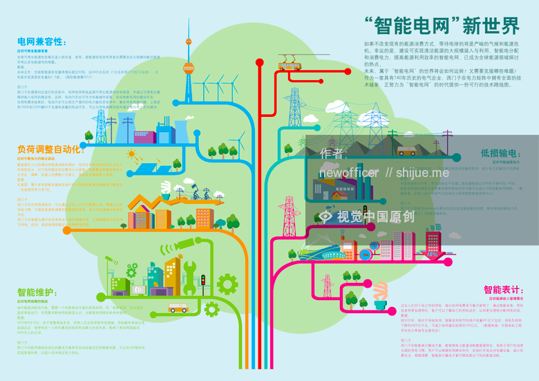
智能电网
用电、负荷、故障
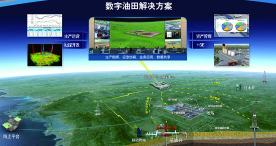
数字油田
井况、产量、设备传感
政务大厅
办件、证照、人口、企业
数据从哪里来？三种方式
| 方式 | 典型 | 谁在“生产” | 管理视角 |
|---|---|---|---|
| 主动产生 | 互联网大数据 | 海量用户 | 平台掌握，数据即资产 |
| 主动采集 | 天文、基因 | 研究机构 | 采集成本高，共享价值大 |
| 被动产生 | 数字油田、智能电网、政务大厅 | 业务系统 | 数据沉睡，需要“唤醒” |
管理者的第一个问题：我的组织里，有哪些数据正在“被动产生”却无人使用？
数据的量级：从 KB 到 ZB
数据量：
2018 年的预测，偏保守了
2018 年报告预测 2025 年为 175 ZB；2026 年 6 月的最新口径，2025 年约 218 ZB，2030 年约 719 ZB。
DataSphere 统计“创建、采集、复制、消费”的总量，其中约 90% 是复制与消费——不等于“有价值的新数据”。
中国的数据：规模领先，价值待释放
同比 +27.28%，约占全球 27.44%
同比 +21.05%；结构化数据占 22.13%
具身智能数据同比 +477.78%
年度“生产”52 ZB，累计存储 2.5 ZB，结构化数据仅占其中约 22%——数据多 ≠ 数据有价值。
数字经济：继农业、工业之后的主要经济形态
数字经济是以数据资源为关键要素，以现代信息网络为主要载体，以信息通信技术融合应用、全要素数字化转型为重要推动力，促进公平与效率更加统一的新经济形态。
土地 · 劳动
资本 · 技术
数据 · 网络 · 算力
从“按劳分配”到“数据入列”
“数据二十条”：四项基础制度
数据产权
保障权益、合规使用
流通交易
合规高效、场内外结合
收益分配
体现效率、促进公平
安全治理
安全可控、弹性包容
数据进入资产负债表：规模还很小
（2025 年中；2024 年报为 100 家）
合计约 16 亿元（60.7%）
已获融资合计约 19 亿元
难点不在“有没有数据”，而在确权、估值、审计口径——这正是 MBA 的问题。

一棵决策树，
解释了谁赢下哪里
2008 年民主党初选：县一级数据 → 少数几个变量，就能划分出选民结构。
变量：种族比例、教育水平、地区、贫困率、人口密度……
这就是机器学习里最经典的模型之一：决策树（Lecture 5 再见）。
美国率先把大数据
上升为国家战略
《Big Data Research and Development Initiative》
首批承诺投入 2 亿美元以上，用于大数据的采集、存储、分析技术
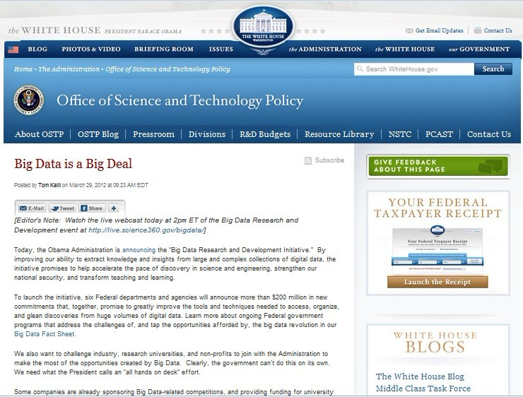
学界同步行动：“大数据的理论基础”
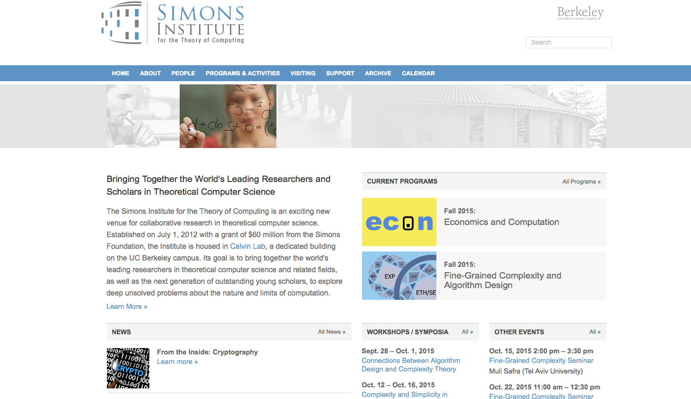
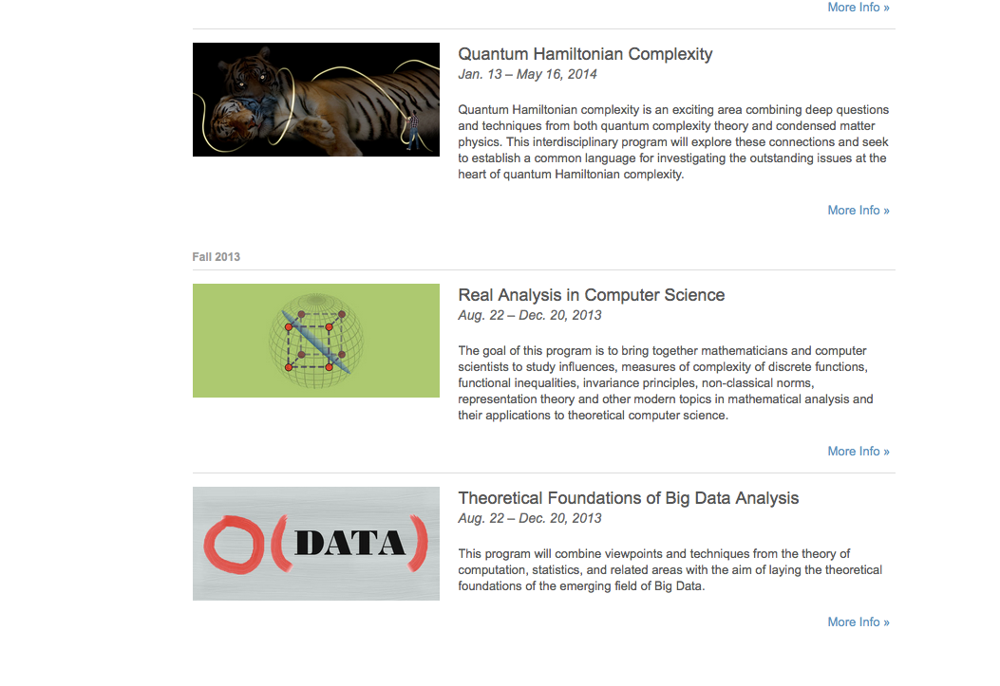
政府、产业、学界，在 2012–2013 年几乎同时把“大数据”当作一个独立的问题来对待。
Part 1 · 三句话
数据来自互联网、科学观测与业务系统——越来越多，也越来越“沉睡”。
2019 年起，数据被明确为生产要素；制度在补课：产权、交易、分配、治理。
数据入表、数据交易刚刚起步——数据到底值多少钱？（Part 3）
人工智能时代
首次提出国家大数据战略
考察贵阳大数据广场，听取大数据产业发展汇报。
拓展网络经济空间，推进数据资源开放共享，实施国家大数据战略，超前布局下一代互联网。
十项工程：从数据开放到安全保障
一个共同点：先让数据“流”起来（共享、开放、统筹），再谈数据“用”起来。
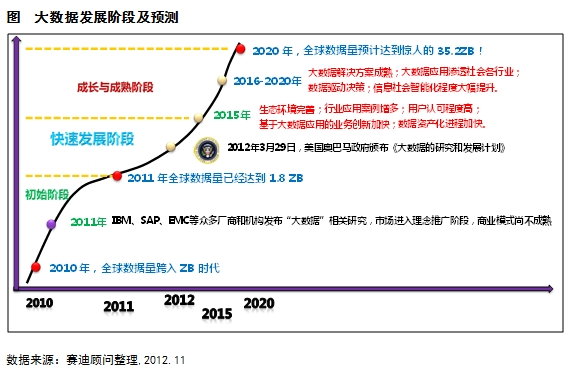
十多年前的预测，
回访一下
预测 2020 年全球数据量 35 ZB；中国 2025 年将成为数据第一大国。
2025 年中国年度数据生产 52.26 ZB，约占全球 27.44%——全球数据量远超当年预测。
从“大数据”到“人工智能+”
战略的落点：具体的产品
智能网联汽车
智能服务机器人
智能无人机
医疗影像辅助系统
视频图像身份识别
智能翻译系统
智能家居产品
共同特征：数据密集 + 场景明确 + 能被客户“看见”的产品。
同一时期，美国在做什么
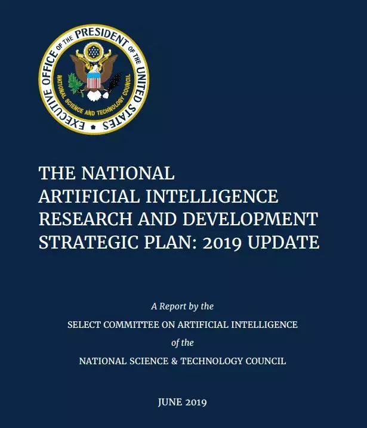
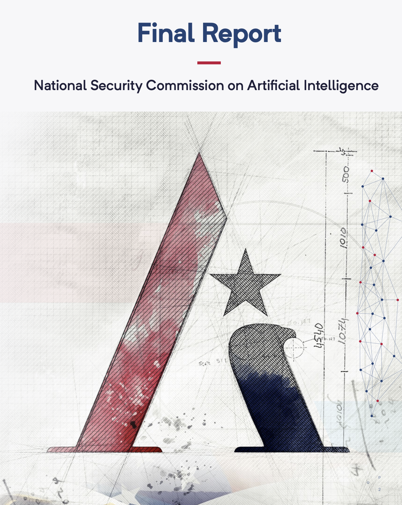
America’s AI Action Plan
三大支柱：加速创新、建设 AI 基础设施、主导国际外交与安全。
AI 被视为国家竞争力与安全问题；算力、数据、人才是关键资源。
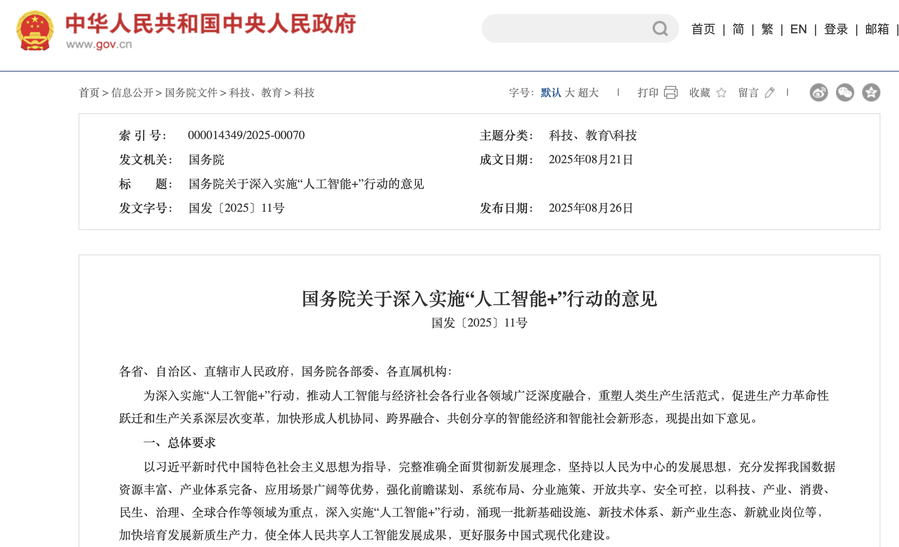
三个时间点：2027 · 2030 · 2035
2027：智能终端、智能体等应用普及率超 70%
2030：普及率超 90%，智能经济成为重要增长极
全面步入智能经济和智能社会新阶段
“人工智能+”：六大行动
强化算力 · 算法 · 数据高效供给
全国一体化算力网
东数西算；2025 年底全国智能算力 159 万 PFLOPS（FP16）
模型算法迭代
通用大模型与行业专用模型并行；多模态、智能体、具身智能
高质量数据资源
建设人工智能语料库、行业高质量数据集，建立训练数据合理使用制度
2026 年政府工作报告首次提出“智能经济”；2026 年被称为“数据要素价值释放年”。
模型企业的需求变了：
从“有没有数据”，
到“有没有对的数据”
“把真实场景优势变成数据优势，再转化为模型能力和产业竞争力。”
同比 +42.86%
推理数据首次超过训练数据
把数据商业讲清楚：五个问题
需要什么数据？
大模型吃什么：规模、质量、数据墙
怎么建设？
数据飞轮、高质量数据集、数采工厂
怎么交易？
交易所、数据商，从“卖数据包”到“卖 Token”
多贵？
授权费、侵权赔偿、标注公司估值、每小时数据价
为何=能力？
物理 AI 的数采，AI4S 的自动化实验室
五年增长约 120 倍
1 T = 1 万亿 Token；5 年间，训练数据量增长两个数量级。
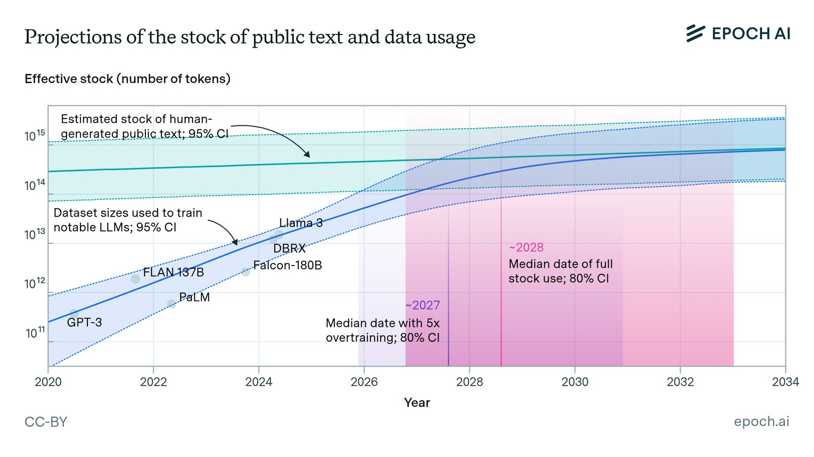
人类写的公开文本，
快不够吃了
公开文本有效存量约 300 T Token；2026–2032 年间被训练用量追平。
合成数据 · 多模态 · 私域 / 授权数据
真实世界数据：机器人、实验室——互联网上没有，只能自己造
大模型要的不是一种数据
网页、书籍、代码、论文 → 去重、过滤、配比（FineWeb 即清洗流水线）
指令示范、偏好对比（RLHF）→ 领域专家写答案、打分
数学题、代码测试、软件环境 → 对错能自动判定
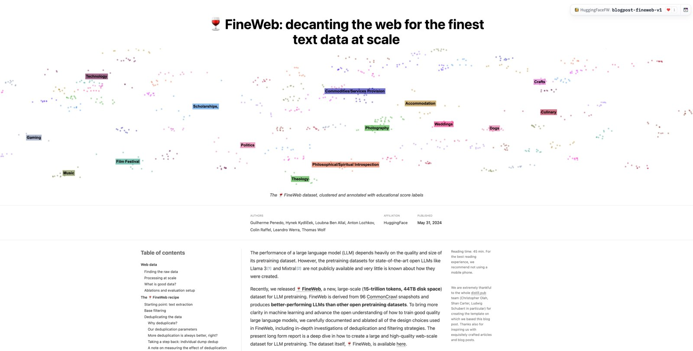
趋势：越往后，数据越少、越贵、越专业——这正是下一页“数据商业”的起点。
高质量数据集：
建设的数据飞轮
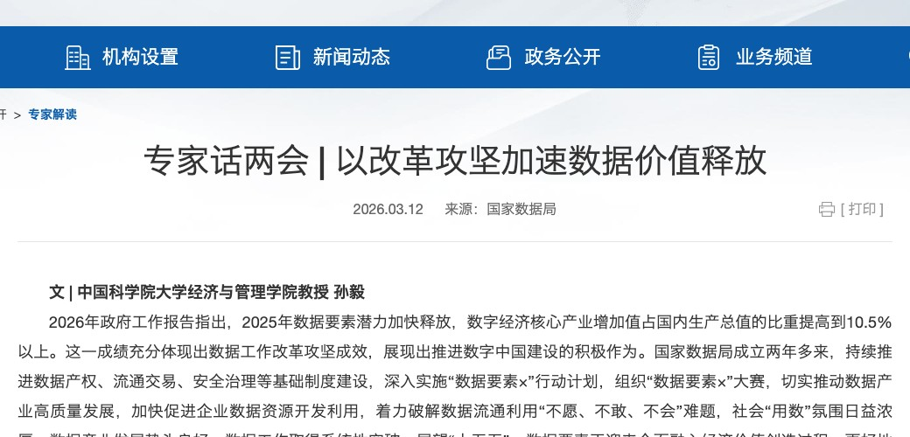
数据建设成了“工程”
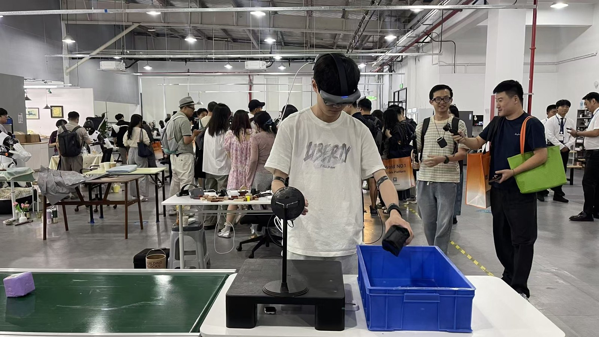
机器人的数据，要建“工厂”
全国具身训练场 70+ 座，在建 46 座；地方投入上百亿
日产能 >500 小时；已交付近 2 万小时；目标 100 万小时
国资参与率 88%→54%；多地数采厂闲置——先建产能、再找订单是坑
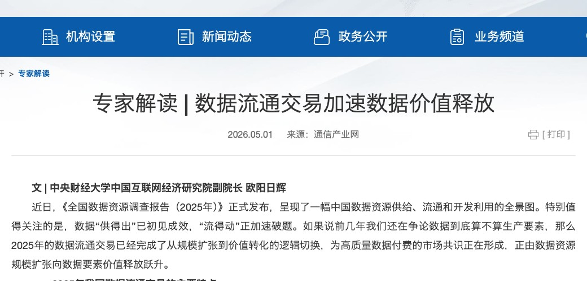
三类流通服务机构，
各有分工
规则、合规、价格发现——综合服务
围绕产业链：专业化流通
采集、加工、开发数据产品
“有场无市”：数据交易的现实
为什么难？同一份数据对不同买家价值差异极大 → 怎么定价、怎么计量是核心瓶颈。下一页看新答案。
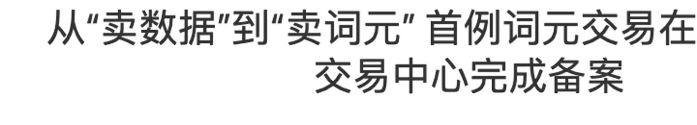
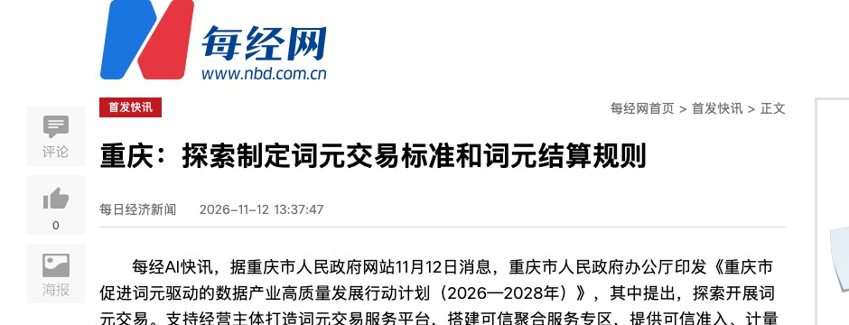
从“卖数据”
到“卖词元”
数据词元按智能体调用的输入量；算力词元按模型输入 / 输出量
数据词元化 → 智能体调用 → 按量结算，像水电表
收入从“卖一次”变持续订阅；价值看“被用了多少”
一座内容库，每年数千万美元
内容独特性 × 买家支付意愿；差距可达数量级
从一次性买断 → 按调用 / 引用计价（与 Token 交易同向）
约 $3,000，涉及约 48–50 万本书（LibGen 等盗版库）
HarperCollins 书籍授权：约 $5,000 / 本（作者出版社分成）
合规的数据，才有价格；“免费”的数据，账单会在后面
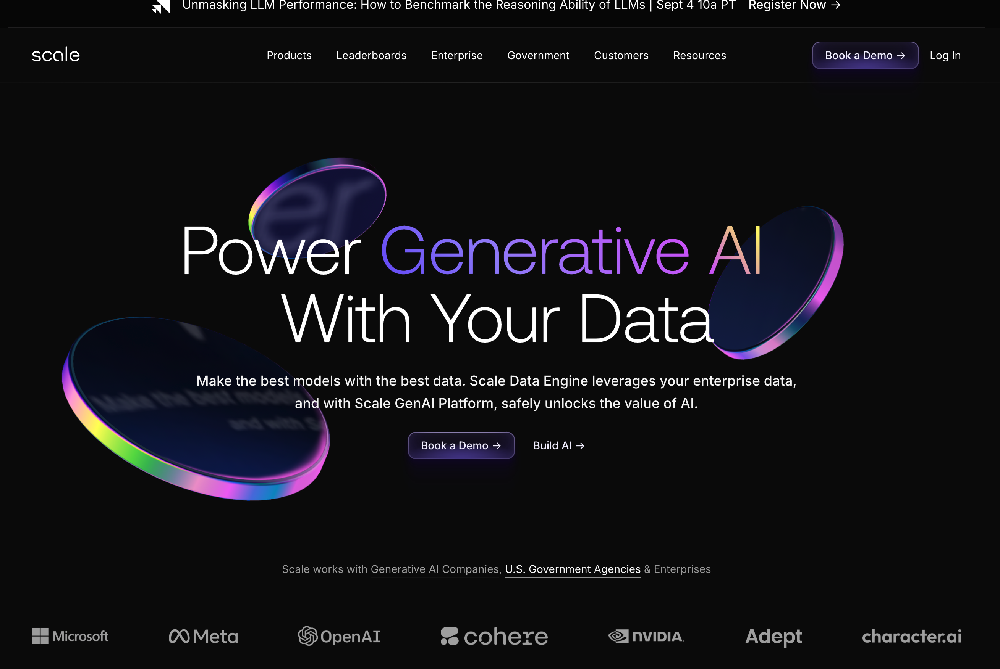
卖“数据”的公司，
估值 290 亿美元
Meta 投资约 143 亿美元，获约 49% 股权；创始人 Alexandr Wang 加入 Meta。
Mercor 估值 100 亿美元（2025.10，融资 3.5 亿）；Turing 22 亿美元（2025.03）
标注从“众包”转向博士级专家参与——数据质量就是模型质量。
具身数据：按“小时”计价
质量—规模—成本的“不可能三角”：三条路线并存，各管一段。
一套遥操设备 >20 万；本体 60–70 万；遥操员每天有效仅 2–3 小时
模型会什么，
取决于见过什么
谁拥有别人没有的数据——谁就拥有别人没有的能力。
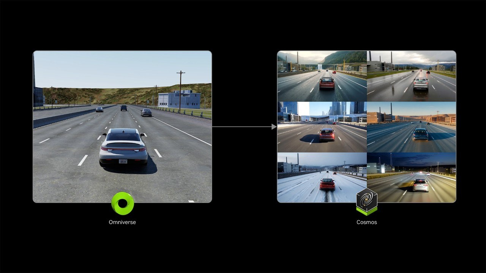
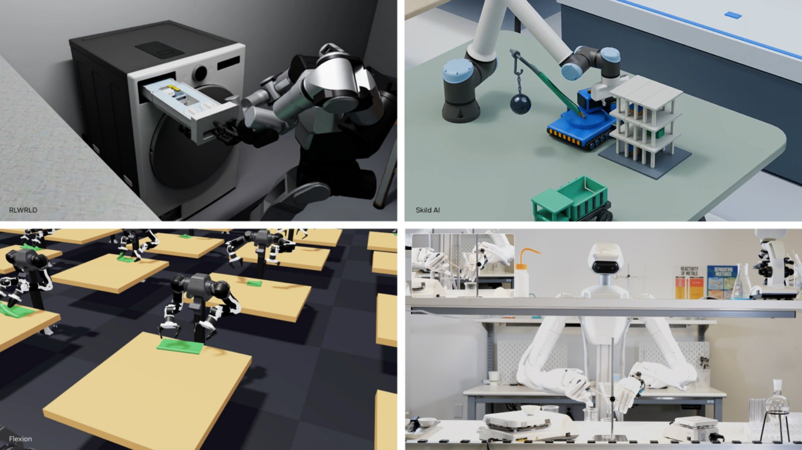
真实数据少而贵，
合成数据多而便宜
行业高质量真机数据约 50 万小时；业界估计需 千万小时
少量真机 + 大量仿真 / 视频生成：Cosmos、世界模型
具身智能数据生产量 2025 年 +478%（国家数据局）
倒水一个动作，
要重复几百次
每天 100 台机器人训练，产生上万条数据
5000 ㎡、上百台、十几家本体，目标全年 1000 万条
AgiBot World 数据集公开——用开放换生态
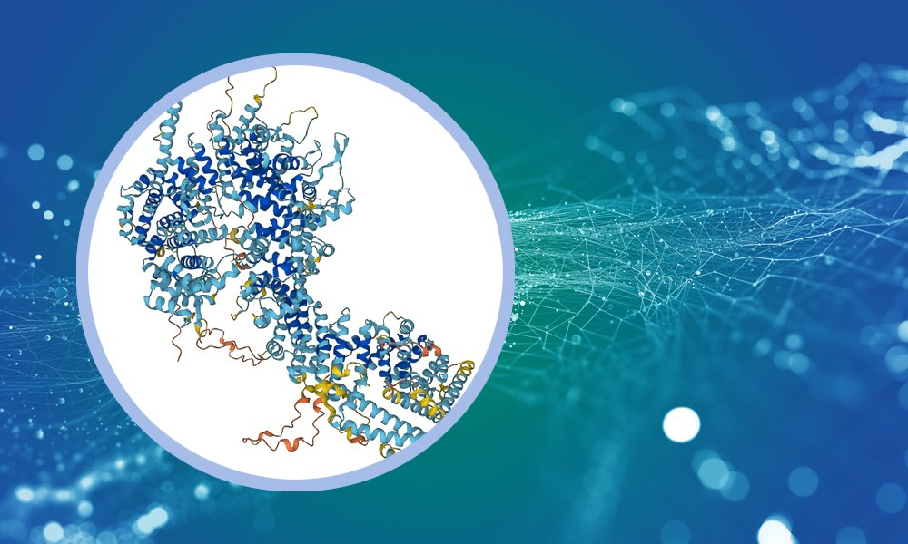
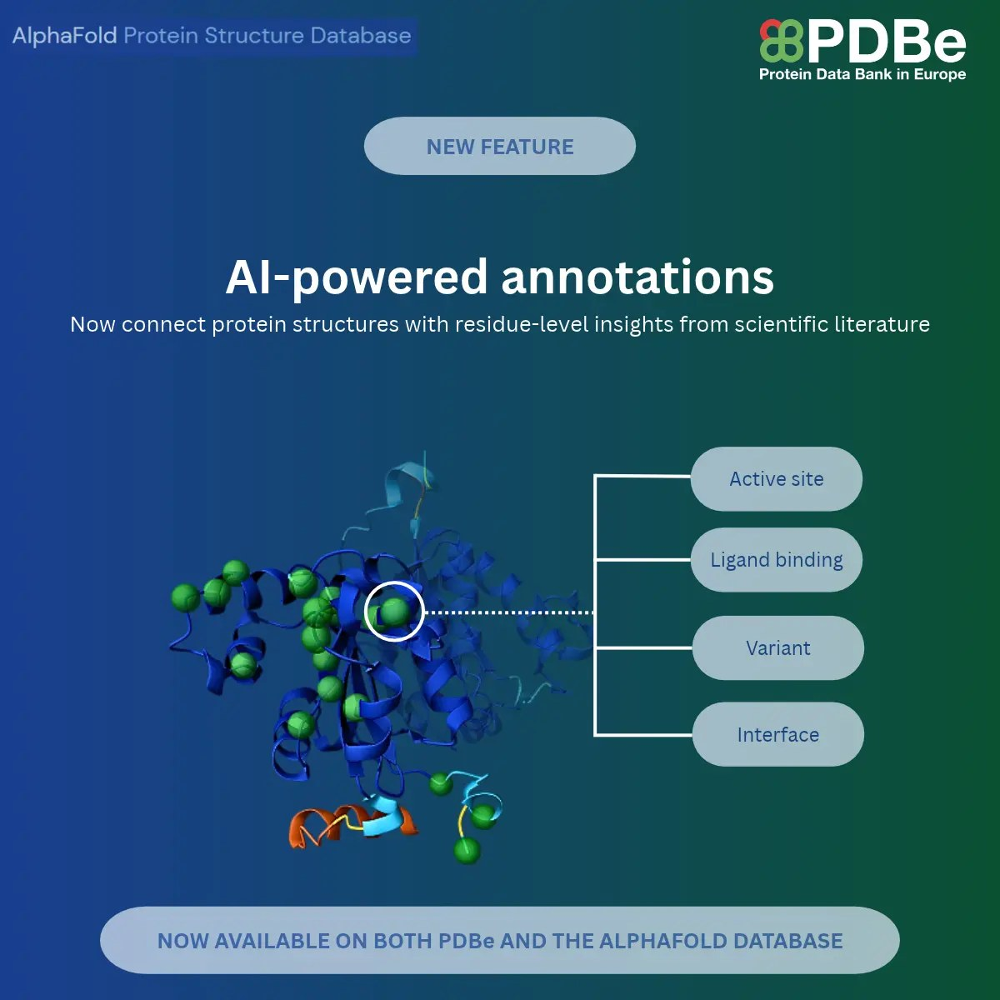
算法是 DeepMind 的，
数据是全人类的
约 17 万个 PDB 实验结构 + 大型序列库
128 块 TPUv3 核、数周——零售价低于 10 万美元
PDB 自 1971 年起，几十年、全球科学家用晶体学 / 冷冻电镜一个个“测”出来
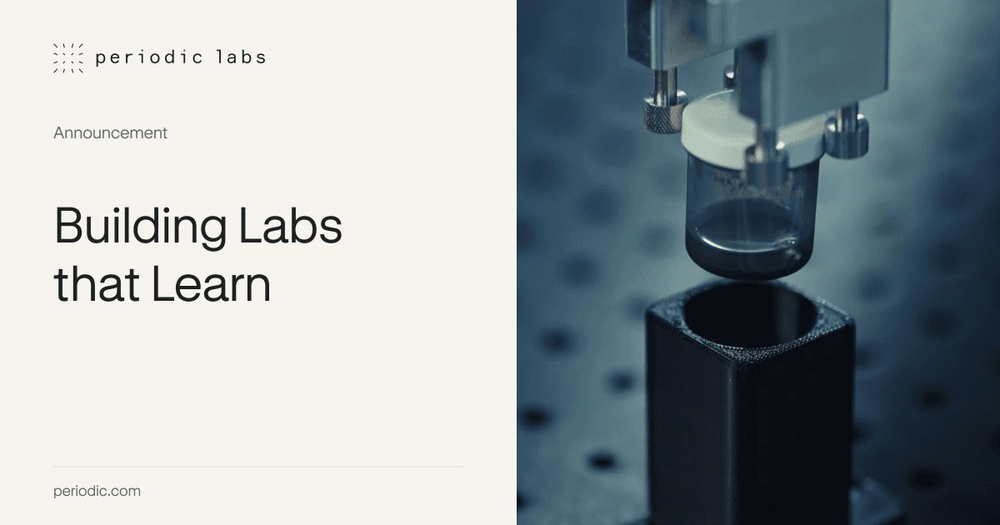
科学的数据，
要自动化实验室来产
$3 亿种子轮，a16z 领投；创始人来自 OpenAI / DeepMind
机器人合成粉末材料、测性质——一次实验数 GB 数据
自然界就是强化学习环境；失败的实验也是数据
数据商业：五句话
要什么：规模（万亿 Token）→ 质量（专家）→ 可验证（环境）；公开文本将见底
怎么建：数据飞轮 + 国家级高质量数据集 + 物理世界数采工厂
怎么卖：三类机构；从“卖数据包”走向“按 Token 计量”
多贵：文本数千万美元 / 年；盗版 $3,000 / 本；真机 500–1000 元 / 小时
为什么：别人没有的数据 = 别人没有的能力（物理 AI、AI4S）
数据价值
本课程的目的：让数据产生价值
数据
算法 · 智能
商业价值
数据本身不产生价值，被用于决策的数据才产生价值。
业务的核心诉求！
准确率 95%、AUC 0.9、模型参数量……
多卖了多少？少花了多少？少亏了多少？
模型指标是手段，业务指标才是目的。
价值的三个表现：收入 · 支出 · 风险
收入 ↑
个性化推荐、精准广告

支出 ↓
智能客服、智能制造

风险 ↓
信用评估、反欺诈
千人千面：用数据猜你想要什么
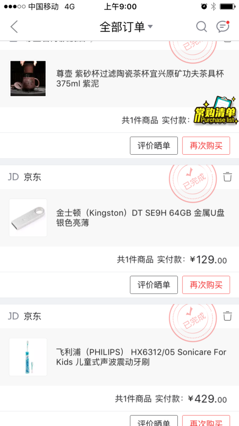
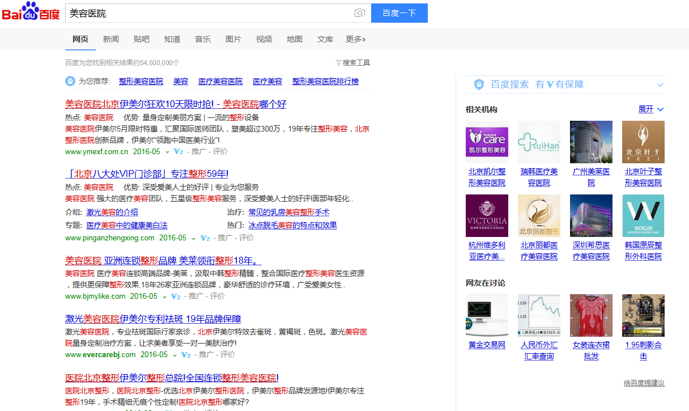
广告位，是数据
最直接的变现形态
预测你会不会点（点击率）
按预期收益排序展示
按点击 / 转化计费
客服是成本中心，
也是数据富矿
人工坐席：人力、培训、流失，成本随话务量线性增长。
智能应答分流常见问题，人工专注复杂问题；对话数据反哺产品与服务。
制造业：降成本 = 增利润
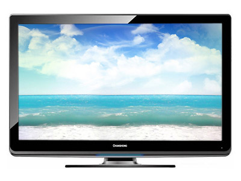
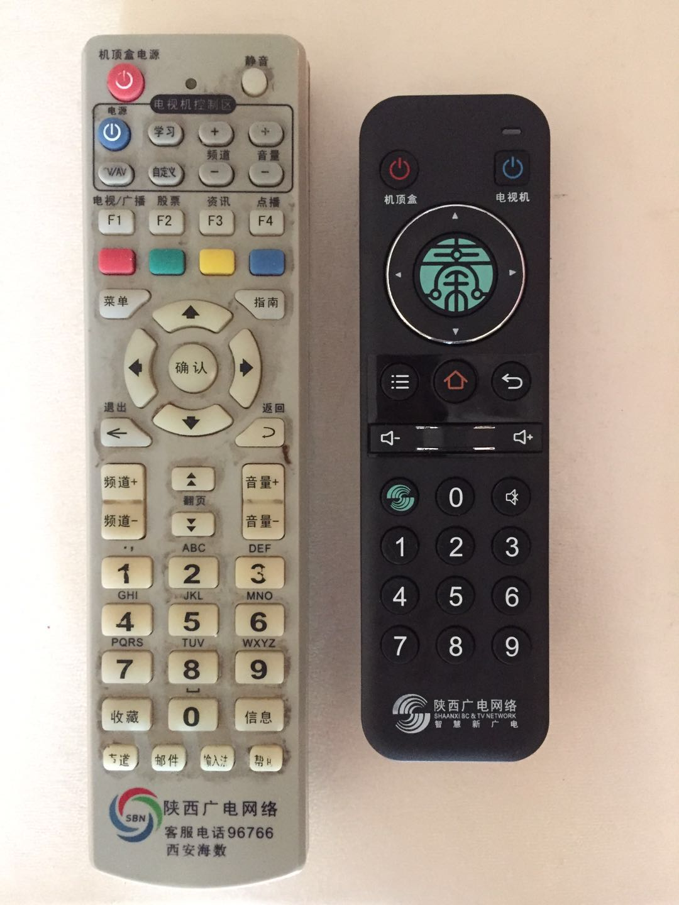
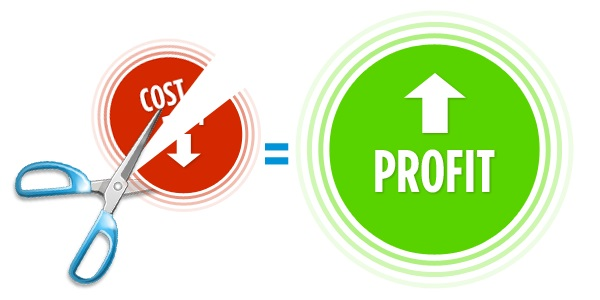
从原料、工艺、质检到返修：每一环节的数据，都可能对应一笔成本。
谁会还钱？用数据给风险定价
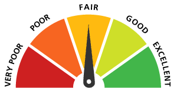
信用评分 → 区分好 / 坏客户 → 减少坏账。但拒绝太多，又损失收入。
阈值设多高？收入与风险的权衡
假设：12% 为坏客户；放贷给好客户赚利息 +10，给坏客户损失 −100。
效果如何？先找可量化的参考系
价值，落到可以测量的数字
库存周期 3 个月 → 1 个月
综合提升产量
预警能力提升（定性）
注意：这些是官方披露的案例，口径与基线由各企业自行定义——回到刚才的问题：参考系是什么？
数据开始被购买，但还不普遍
交易额同比增长
数量同比增长
购买过数据的比例
头部平台与央企的购买费用是其他企业的 60 倍；金融、软件和信息技术服务业购买比例超 30%。
总结：四个问题
什么是数据？
数字、图像、声音；互联网、科学、业务系统；2019 年起为生产要素。
什么是价值？
业务的核心诉求。
价值如何表现？
收入 ↑ 支出 ↓ 风险 ↓
价值如何评估？
找到可量化的参考系：转化率、成本、坏账率……再做 A/B 对比。
轮到你了
自己所在岗位的核心业务诉求是什么？
它能为公司带来什么价值？
要完成这个核心业务诉求，需要什么潜在的业务知识与技能？
如何评估？参考系是什么？
把刚才四问，
蒸馏成可复用 Skill
核心业务诉求 → SKILL.md 角色与任务边界
价值 → 描述里写清“何时触发、交付什么”
知识与技能 → references/ 清单与范例
评估参考系 → scripts/ 或验收检查项
“蒸馏”= 把隐性经验写成 Agent 可按需加载的员工手册，而不是一次性聊天记录。

同事.skill：
开源的「蒸馏员工」
titanwings/colleague-skill（现名 dot-skill / Distilly）— 遵循 AgentSkills 标准
Part A · work.md：职责、流程、规范、经验库
Part B · persona.md：表达、决策、人际风格
聊天记录、邮件、飞书 / 钉钉导出 → 生成 colleagues/{slug}/SKILL.md
安装后对 Agent 说「蒸馏某位同事」→ 调用 /{slug}，像本人一样回答与干活
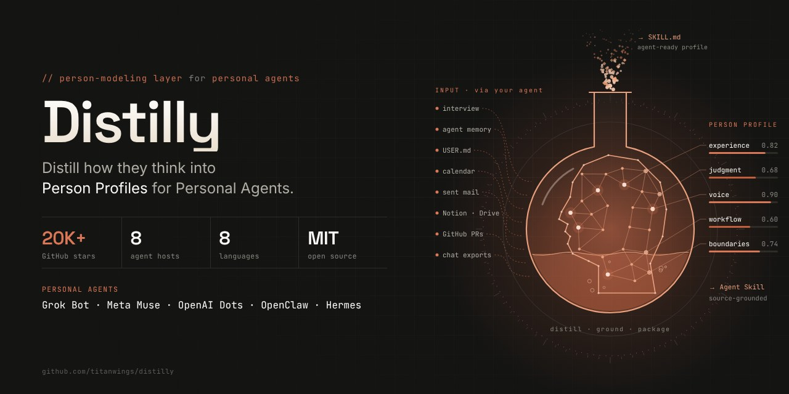
├── SKILL.md
├── work.md
├── persona.md
└── source/（messages · emails）
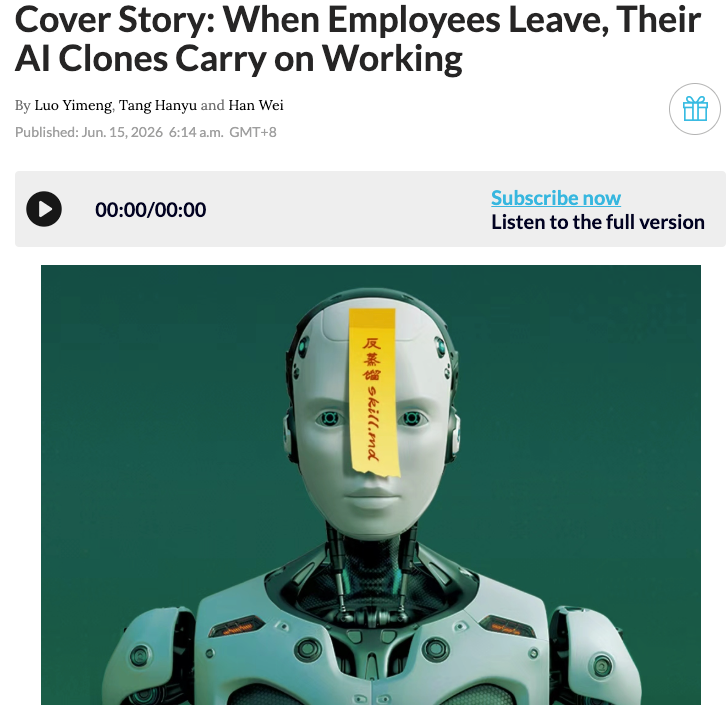
Reuters 2026.04.21：Meta 在工作电脑采集鼠标、键盘与屏采，训练办公 Agent（MCI）；CNBC 补充跟踪站点清单
大厂在做的
「蒸馏员工」
工作电脑采集：鼠标 · 键盘 · 应用上下文 · 屏采 → 行为克隆训练办公 Agent
同事.skill 输出 .md 文件夹；MCI 输出 模型权重——可复制、部署，接替日常任务
财新等报道：岗位被拆成 Skill / Agent 后，人走流程留；另有企业把离职同事做成「数字人」接班（⚠ 同意与伦理）
课堂讨论：你的 Q1–Q4，愿意蒸馏成 自己的 Skill，还是担心被公司蒸馏走？
数据科学与
AI 1.0
从“数据有价值”，到“怎样用数据与规则做出第一个智能系统”。

参考文献 R1–R11
R1 国家数据局：《全国数据资源调查报告（2025年）》，2026-04-29 — nda.gov.cn/sjj/zhuanti/ztszzh/0429/20260429164803571173880_pc.html
R2 国家数据局：构建数据基础制度 2025 年工作要点 — nda.gov.cn/sjj/swdt/sjdt/0428/20250428132338848329482_pc.html
R3 数据要素乘数效应有力释放 — gov.cn/zhengce/202506/content_7026155.htm
R4 上海高级金融学院：企业数据资产入表情况跟踪报告（2025 上半年），转引自第一财经 — yicai.com/news/102927148.html
R5 国务院：关于深入实施“人工智能+”行动的意见（国发〔2025〕11 号）— gov.cn/zhengce/zhengceku/202508/content_7037862.htm
R6 “十五五”规划纲要（2026–2030）— gov.cn/yaowen/liebiao/202603/content_7062633.htm
R7 国家发改委：政府工作报告首提“智能经济”— ndrc.gov.cn/wsdwhfz/202603/t20260313_1404128.html
R8 国家数据局：高质量数据集和数据标注先行先试现场会，2026-11-14 — nda.gov.cn/sjj/ywpd/szkjyjcss/1114/20261114110623086743990_pc.html
R9 国家数据局：专家解读《关于推进行业高质量数据集建设行动的实施方案》，2026-06 — nda.gov.cn/sjj/zwgk/zjjd/0610/20260610184207948233640_pc.html
R10 Reuters / TechCrunch：Meta 投资 Scale AI，2025-06-13
R11 IDC Global DataSphere：June 2026 forecast — idc.com/resource-center/definitions/what-are-the-global-datasphere-and-global-storagesphere/
P 原 PPT：Materials/Lecture_2_intro.pptx（图片多来自原稿，来源见各页）
参考文献 R12–R46
R12 GPT-3 论文（Brown et al., 2020）；Llama 2（2023）；Llama 3（Meta, 2024，15T+ tokens）；Qwen3 Technical Report（2025，36T tokens）
R13 Hugging Face：FineWeb 数据集与技术博客 — huggingface.co/datasets/HuggingFaceFW/fineweb
R14 Epoch AI：Will we run out of data? — epoch.ai/blog/will-we-run-out-of-data-limits-of-llm-scaling-based-on-human-generated-data
R15 国家数据局：专家话两会｜以改革攻坚加速数据价值释放，2026-03-12
R16 总台 / 北京日报：北京人形机器人创新中心数据训练基地，2026；第一财经：跨界资本加速涌入，具身智能数据采集成风口
R17 创业邦 / 腾讯新闻：报价跌至20元/小时，具身数据淘金潮，2026-11-07（引《具身数据发展报告2026》，Interact Analysis）；澎湃新闻美数课：117 个数采项目，2026-09
R18 国家数据局等：《关于培育数据流通服务机构 加快推进数据要素市场化价值化的意见》（国数政策〔2026〕6号）— gov.cn/zhengce/zhengceku/202602/content_7057405.htm
R19 国家数据局：专家解读｜数据流通交易加速数据价值释放，2026-05-01；专家解读｜强化数据交易所综合服务功能，2026-02-10
R20 国家信息中心：建设开放共享安全的全国一体化数据市场，2026-06-25
R21 央视新闻 / 国家数据局：2025 年企业数据产品和服务交易额同比增长 39.8%，2026-06-11
R22 大众网：首例词元交易在青岛大数据交易中心完成备案（转载于数据要素×项目办 deo.org.cn）
R23 每日经济新闻：重庆探索制定词元交易标准和词元结算规则，2026-11-12
R24 数据星球：词元交易密集落地，2026-10-15（二手汇总）；银行网：数据产业“爆发”与“空转”（⚠ 二手）
R25 Quartz：The price of AI training data, from $5M to $250M，2026-05
R26 aidata.auction：AI Data Deal Tracker；CB Insights：AI content licensing deals；Reuters（Reddit–Google，2024-02）；WSJ（News Corp–OpenAI，2024-05）
R27 Publishers Weekly：Anthropic Agrees to Pay $1.5 Billion to Settle Copyright Lawsuit，2025-09
R28 Authors Guild / 法院文件：Bartz v. Anthropic 和解终审（2026-07）；anthropiccopyrightsettlement.com
R29 第一财经：具身智能数据采集成风口（价格区间引智元合伙人发言）
R30 NVIDIA：Physical AI Data Factory Blueprint 新闻稿，2026-03
R31 NVIDIA 开发者博客：Scale Synthetic Data and Physical AI Reasoning with Cosmos，2025-03
R32 NVIDIA 博客：Robotics simulation advancements at CoRL，2026-11
R33 数字中国建设峰会：在上海，机器人正加速“进化”，2025-05-19
R34 Hugging Face：agibot-world/AgiBotWorld2026 数据集
R35 DeepMind AlphaFold 2 方法说明（约 17 万 PDB 结构，128 TPUv3 核）；社区估算训练成本，见 Hacker News 讨论（⚠ 非官方）
R36 EMBL：AlphaFold – using open data and AI to discover the 3D protein universe；EMBL-EBI AlphaFold DB
R37 a16z：Investing in Periodic Labs，2025-09
R38 SiliconANGLE / TechCrunch：Periodic Labs raises $300M，2025-09 / 10
R39 titanwings/colleague-skill（同事.skill / Distilly）— github.com/titanwings/colleague-skill
R44 Reuters：Meta to start capturing employee mouse movements, keystrokes for AI training，2026-04-21
R45 Caixin Global：When Employees Leave, Their AI Clones Carry on Working，2026-06-15
R46 36氪、虎嗅：MCI 与「同事.skill」对比（2026.04，⚠ 二手解读）；CNBC 2026-04-22 跟踪站点列表